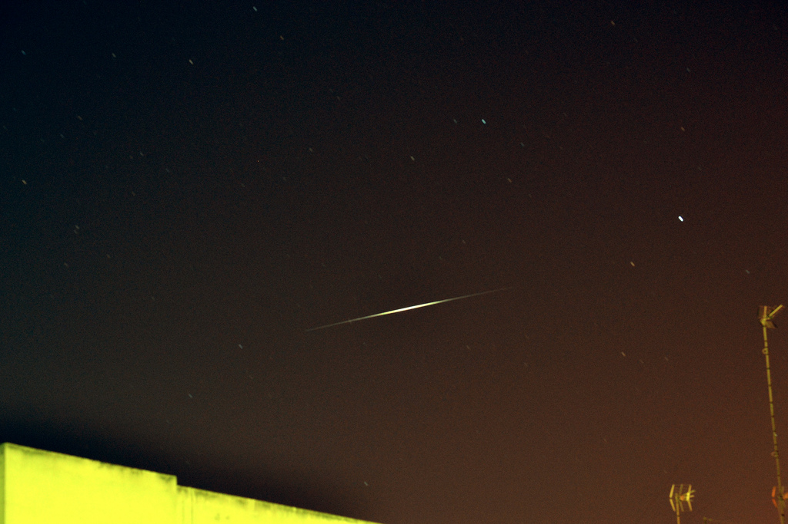

Vistas desde la Torre de Poniente de la Catedral de Cádiz.
Manifestación del 15-O en la Plaza de España en Cádiz.
Estela del satélite Iridium 8 en verano de 2013.
Vaporcito de El Puerto surcando el Guadalete.
Me encanta hacer fotos, sobre todo de monumentos, museos, lugares de importancia histórica, paisajes, eventos culturales y desde zonas elevadas. Tras varias cámaras compactas, en 2012 me compré mi primera reflex, una NIKON D3100. La diferencia en calidad es notable, aunque también es algo más difícil de usar.
|
|
 | |
Vistas desde la Torre de Poniente de la Catedral de Cádiz. |
Manifestación del 15-O en la Plaza de España en Cádiz. |
Estela del satélite Iridium 8 en verano de 2013. |
Vaporcito de El Puerto surcando el Guadalete. |
Aún estoy aprendiendo a manejar todas sus funciones, ya que a pesar de que tiene un modo automático, lo suyo es hacerlo en manual y exprimir toda su capacidad.
Puedes ver muchas de mis fotografías en perfil de Flickr, también ordenadas por colecciones y álbumes.

{kind=link}